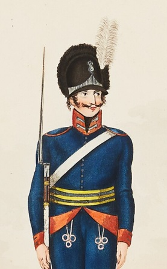

Ingrid Nilsdotter.

Född 14 okt 1759 i Stohagen, Idingstad, Östra Harg (E) 5 .
Död 19 dec 1818 i Grimsberg, Grimstad, Östra Harg (E) 6 .
|
Född
12 jun 1763
i Torpa (E)
1
.
Död 13 maj 1847 i Grimsberg, Grimstad, Östra Harg (E) 2 . |
 |
|
Olof Olofsson Modig
Född 12 jun 1763 i Torpa (E) 1 . Död 13 maj 1847 i Grimsberg, Grimstad, Östra Harg (E) 2 . |
|||
|
Gift
1 okt 1786
i Landeryd (E)
4
.
Ingrid Nilsdotter.
Född 14 okt 1759 i Stohagen, Idingstad, Östra Harg (E) 5 . Död 19 dec 1818 i Grimsberg, Grimstad, Östra Harg (E) 6 . |
Framställd 12 aug 2026 med hjälp av Disgen version 2025.